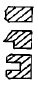
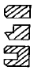
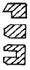
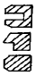
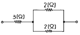

농기계운전기능사 (2002-07-21 기출문제)
1과목: 농기계운전
1. 실린더의 총배기량이 1500㏄이고, 연소실체적이 300㏄일 때 압축비는?
- 5
- 6
- 7
- 8
(정답률: 55%)

2. 행정이 98㎜인 기관이 1800rpm으로 회전한다. 피스톤의 평균속도(m/sec)는?
- 약 5.9
- 약 3.9
- 약 2.9
- 약 1.9
(정답률: 35%)
3. 흡배기 밸브에 밸브간극을 두는 이유는?
- 열팽창 때문에
- 소음 방지 때문에
- 스프링 작용 때문에
- 전압 조정 때문에
(정답률: 67%)
4. 다음 중 부동액으로 부적합한 것은?
- 글리세린
- 에틸렌글리콜
- 알콜
- 메탄
(정답률: 36%)
5. 내연기관 연소의 3대 요소가 아닌 것은?
- 강한 불꽃
- 강한 압축력
- 양호한 혼합기
- 양호한 기름순환
(정답률: 57%)
6. 디이젤 기관의 고장증상 중에서 정상적인 부하인데도 검은 연기를 내는 원인은?
- 연료 분사시기가 빠르거나 늦을 때
- 연료 분사 노즐이 불량할 때
- 피스톤 라이너가 탓을 때
- 실린더 라이너 O링이 마멸되었을 때
(정답률: 36%)
7. 지시마력이 160㎰이고, 제동마력이 128㎰이라면 기계효율은?
- 32%
- 42%
- 60%
- 80%
(정답률: 52%)
8. 트랙터 타이어에서 12.4×11-4인 경우 4의 의미는?
- 림의 직경 이다.
- 림의 폭 이다.
- 타이어 높이 이다.
- 플라이(ply)수 이다.
(정답률: 66%)
9. 펌프의 양수량이 감소될 때의 원인이 아닌 것은?
- 흡입관 안에서 공기가 새어 들어올 때
- 임펠러가 마멸되었을 때
- 풋트밸브와 임펠러에 오물이 끼었을 때
- 전기의 주파수 증가로 전동기의 회전이 증가되었을 때
(정답률: 59%)
10. 동력 경운기 점화 플러그에 검은 탄매가 쌓이는 원인 중 알맞은 것은?
- 플러그의 열가가 너무 열형이다.
- 플러그의 열가가 너무 냉형이다.
- 플러그의 직경이 너무 큰 것을 사용하였다.
- 플러그의 직경이 너무 작은 것을 사용하였다.
(정답률: 34%)
11. 경운기 텐션 풀리 베어링에는 어떠한 오일(oil)을 사용하는 것이 가장 좋겠는가?
- 모터오일
- 기어오일
- 그리이스
- 기계오일
(정답률: 55%)
12. 자동 탈곡기에서 스크로우 컨베이어와 양곡기로 구성된 부분은?
- 자동공급장치
- 탈곡부
- 2번구 환원처리 장치
- 자동풍력 조절장치
(정답률: 47%)
13. 가축의 담근먹이를 제조할 때 수확과 동시에 절단이 가능한 기종은?
- 헤이 로우터
- 헤이 베일러
- 포오리지 하아베스터
- 휘일 커터
(정답률: 47%)
14. 다음 기구들 중 축산용 기계가 아닌 것은?
- 휘일 커터(Wheel cutter)
- 피이드 그라인더(feed grinder)
- 현미기
- 해머 밀
(정답률: 71%)
15. 피스톤링 엔드 갭 측정을 하는 공구는?
- 내경 마이크로미터
- 시크니스 게이지
- 외경 마이크로미터
- 다이얼 게이지
(정답률: 43%)
16. 다음 피스톤 링의 단면도(斷面圖)에서 1번링(No1), 2번링(No2), 3번링(No3)이 피스톤헤드 쪽에서 순서대로 맞게 배열된 그림은?




(정답률: 50%)
17. 건초를 운반이나 저장에 편리하도록 꾸리는 작업기는?
- 레이크
- 모우어
- 베일러
- 드스크하로우
(정답률: 48%)
18. 바인더 예취칼날 간격을 적게 조정하려면?
- 조정심을 뺀다.
- 조정심을 더한다.
- 조정볼트를 푼다.
- 조정볼트를 조인다.
(정답률: 35%)
19. 콤바인으로 벼를 수확할 때 벼의 도복각이 크면 곡립손실은 어떻게 되는가?
- 많아진다.
- 적어진다.
- 상관없다.
- 작업방법에 따라 달라진다.
(정답률: 72%)
20. 단기통 농용 디젤엔진에서 운전정지 후 점검방법이 적당하지 않은 것은?
- 엔진의 청소
- 주유
- 밸브의 닫음
- 연료교체
(정답률: 47%)
21. 기관의 진동과 회전을 고르게 하는 것은?
- 커넥팅로드
- 크랭크축
- 피스톤
- 플라이휠
(정답률: 49%)
22. 양수기 설치 시 주의할 사항 중 맞는 것은?
- 가능한한 수원에서 먼 위치에 설치한다.
- 흡입호스는 직각이 되도록 설치한다.
- 흡입수면에 가까운 높이로 흡입수면보다 높은 위치에 설치한다.
- 흡입호스로 약간의 공기가 들어갈 수 있도록 설치한다.
(정답률: 61%)
23. 동력 경운기의 경운작업 시 주의 사항이다. 틀리는 것은?
- 직진 경운 중에는 조향 클러치 사용금지
- 철차륜으로 도로 주행금지
- 로타리 작업 중 후진 시 경운 변속레버 저속 3단 위치
- 작업 중 포장의 경사지 하강 시는 후진운전
(정답률: 61%)
24. 동력경운기 운전 중 직진성이 나쁠 때의 원인은?
- P.T.O 축 고장
- 부변속 기어 마모
- 주변속 기어 마모
- 좌우 타이어 공기압력의 차이
(정답률: 65%)
25. 농용기관의 장기간 보관 시 조치사항 중 맞지 않는 것은?
- 흡, 배기밸브는 완전히 열린 상태로 보관한다.
- 기관, 트랜스미션 케이스의 윤활유를 점검보충 한다.
- 냉각수를 완전히 비워둔다.
- 연료를 완전히 비워둔다.
(정답률: 56%)
26. 원심펌프의 설치 시에 푸트밸브 설치법 중 맞는 것은?
- 물속 지면위 20㎝위치에 경사지게 설치
- 물속 지면에 닿게 하여 수직으로 설치
- 물속의 지면에서 1m 이상 위로 수직 혹은 경사지게 설치
- 물속의 지면위 60㎝ 이상 수직으로 설치
(정답률: 48%)
27. 동력분무기 운전준비에 관한 사항 중 잘못된 것은?
- 크랭크 오일은 SAE 20∼30번을 규정량 넣는다.
- 운반 중 나사의 이완이 있으니 각종 볼트너트 이상유무를 확인한다.
- V패킹과 플런저간의 유막형성을 위하여 3∼4시간마다 그리이스컵을 2-3회 조여준다.
- 엔진과 연결된 V벨트는 동력전달이 확실히 되도록 팽팽하게 힘껏 조정한다.
(정답률: 58%)
28. 다음은 양수기의 운전 중에 주의 해야 할 사항이다. 틀리는 것은?
- 베어링의 윤활유가 검은 색깔로 변했는지 확인한다.
- 그랜드 패킹에서 물방울이 떨어져서는 안 된다.
- 음향에 유의하고 흡입관에 다른 물질이나 공기가 유입되는지를 확인한다.
- 베어링의 온도가 60℃이상 되어서는 안 된다.
(정답률: 52%)
29. 이앙기에는 보통 4개의 클러치가 있다. 두개의 사이드의 클러치 이외에 다른 두 가지의 클러치는 어느 것인가?
- 주행클러치와 식부날 속도클러치
- 주행클러치와 주간간격 조정클러치
- 주행클러치와 주클러치
- 주행클러치와 식부클러치
(정답률: 41%)
30. 산파 이앙기에서 식부침이 한번 찍어 내릴 때 모의 갯수를 조절하는 것은?
- 플로우트
- 이앙기 전판의 상하 조절레버
- 식부심 조절레버
- 주수 조절 레버
(정답률: 26%)
2과목: 농기계전기
31. 그림과 같은 직·병렬회로의 합성 저항은?

- 1 [Ω]
- 2 [Ω]
- 4 [Ω]
- 7 [Ω]
(정답률: 48%)
32. 6600[V]는 몇[㎸]인가?
- 6.6 x 10-3[㎸]
- 6.6[㎸]
- 6.6 x 103[㎸]
- 6.6 x 106[㎸]
(정답률: 66%)
33. 200[V]의 전압을 가하여 5[A]의 전류를 흘리는 도체의 저항은?
- 500[Ω]
- 20[Ω]
- 0.⑤[Ω]
- 40[Ω]
(정답률: 73%)
34. 축전지의 용량은?
- 음극판 단면적에 비례하고 양극판 크기에 반비례
- 양극판의 크기에 비례하고 음극판의 단면적에 반비례
- 극판의 표면적에 비례
- 극판의 표면적에 반비례
(정답률: 60%)
35. 축전지의 용량이 240[Ah]라면, 이 축전지에 부하를 연결하여 12[A]의 전류를 흘리면 몇 시간 사용이 가능한가?
- 10시간
- 20시간
- 30시간
- 40시간
(정답률: 80%)
36. 축전지 터미널의 부식을 방지하기 위해 사용 되는 것은?
- 그리이스
- 기어오일
- 엔진오일
- 페인트
(정답률: 79%)
37. 등유기관의 마그네트 취급방법 중 틀린 것은?
- 자석을 강하게 때리거나 진동시키지 말아야 한다.
- 마그네트는 항상 깨끗하게 유지하여야 한다.
- 운전 중 마그네트 뚜껑을 열어 기름걸레로 가끔 닦아 준다.
- 마그네트 보관 장소는 건조한 곳이라야 한다.
(정답률: 84%)
38. 단속기 접점간극 조정방법 중 적당한 것은?
- 조정 보울트로 조정한다.
- 고정 보울트로 조정한다.
- 가동접점을 구부려 조정한다.
- 단속기 케이스를 돌려 조정한다.
(정답률: 67%)
39. 광원의 광도가 200cd이고 거리 1m 되는 곳의 조도가 200Lux 일대 거리가 2m 이면 몇Lux인가?
- 50 Lux
- 100 Lux
- 200 Lux
- 400 Lux
(정답률: 28%)
40. 기동장치에 관한 것이다. 틀린 것은?
- 엔진의 기동에 사용되는 일련의 장치이다.
- 기동 전동기로는 축전지를 전원으로 하는 직류 직권전동기가 주로 사용된다.
- 기동 전동기, 레규레이터 등으로 구성되어 있다.
- 소형, 경량이고 토오크가 큰 것이 바람직하다.
(정답률: 43%)
41. 브러시의 접촉이 불량할 때 소손되기 쉬운 것은?
- 계자코일
- 보올 베어링
- 전기자
- 정류자편
(정답률: 50%)
42. 단속기내 축전기의 역할과 관계가 없는 것은?
- 1차 전류의 차단시간을 단축하여 2차 전압을 높인다.
- 점화 2차 코일에 발생하는 유도전류를 흡수한다.
- 접점사이에 발생되는 불꽃을 흡수하여 접점의 소손을 막는다.
- 축전한 전하를 방출하여 1차 전류의 회복이 속히 이루어 지도록 한다.
(정답률: 33%)
43. 축전지의 방전 시 나타나는 것은?
- Pb
- PbO2
- PbSO4
- H2SO4
(정답률: 59%)
44. 내연 기관의 전기점화 방식에서 불꽃을 일으키는 1차 유도전류를 일시적으로 흡수 저장시키는 역할을 하는 것은?
- 진각장치
- 단속기
- 콘덴서
- 배전자
(정답률: 60%)
45. 비오사바아르의 법칙은 다음의 어떤 관계를 나타낸 것인가?
- 전위와 전장의 세기
- 전류와 자장의 세기
- 기전력과 자속의 밀도
- 전류와 자속의 기전력
(정답률: 61%)
3과목: 농기계안전관리
46. 다음 중 분진에서 오는 직업병이 아닌 것은?
- 규폐증
- 난청
- 납중독
- 피부염
(정답률: 76%)
47. 화재는 A급, B급, C급, D급으로 구분한다. 전기 화재는 다음 중 몇 급인가?
- A급
- B급
- C급
- D급
(정답률: 68%)
48. 다음 농업용 기계에 있어서 동력 전달장치 중 가장 재해가 심하다고 생각되는 것은?
- 벨트
- 풀리
- 차축
- 기어
(정답률: 69%)
49. 보호안경을 착용해야 할 작업으로 다음 중 가장 적당한 것은?
- 기화기를 차에서 뗄 때
- 변속기를 차에서 뗄 때
- 장마철 노상운전을 할 때
- 배전기를 차에서 뗄 때
(정답률: 57%)
50. 다음 산업재해 통계 중 어느 일정한(100만 시간)기간 안에 발생한 재해발생의 빈도를 나타내는 것은 어느 것인가?
- 천인율
- 강도율
- 돗수율
- 연천인율
(정답률: 37%)
51. 농용엔진(가솔린) 작동 시 발생하는 배기가스에 포함된 가스 중 인체에 해가 없는 것은?
- CO2
- CO
- NO2
- SO2
(정답률: 79%)
52. 동력경운기의 작업 시 경운부의 부착된 흙과 풀을 제거할 때 주의사항에 맞지 않는 것은?
- 동력을 끊는 것만으로 족하다.
- 기관을 정지시켜야 한다.
- 작업기가 움직이지 않게 하고 평지에서 하여야 한다.
- 경운날에 손과 발이 다치지 않게 주의하여야 한다.
(정답률: 77%)
53. 트랙터를 운전 중 안전운전 방법이 아닌 것은?
- 유압으로 작업기를 올려놓고 그 밑에서 작업하지 말 것
- 승하차는 반드시 트랙터를 정지 시킨 후 할 것
- 경사지 작업 시에는 가급적 차륜의 폭을 넓게 할 것
- 운전자와 작업자가 반드시 동시에 탑승하여 작업할 것
(정답률: 79%)
54. 다음 공구 중에서 일반 공구와 분리해서 보관하는 것은?
- 구리망치
- 센터펀치
- 바이스 플라이어
- 강철자
(정답률: 60%)
55. 전기에 의한 화재의 진화작업 시 사용해야할 소화기는?
- 탄산가스 소화기
- 산, 알칼리 소화기
- 포말 소화기
- 물 소화기
(정답률: 62%)
56. 다음은 연삭숫돌의 검사종류와 검사방법에 대한 설명이다. 검사방법이 바르지 못한 것은?
- 외관검사는 균열, 이물질, 수분 등의 유무를 육안으로 살펴본다.
- 균형검사는 회전 중 떨림을 조사하며 이상이 있을 시 균형추로 조절한다.
- 음향검사는 볼핀해머로 숫돌을 두들겨 울리는 소리로 이상 유무를 진단한다.
- 회전검사는 사용속도의 1.5배로 3-5분간 회전 시켜 원심력에 의한 파괴여부를 검사한다.
(정답률: 34%)
57. 원심펌프의 취급상 유의점이다. 알맞은 것은?
- 원심펌프의 보울베어링에는 모빌유를 사용하되 점도가 낮을수록 동력소모가 작다.
- 장시간 공운전을 실시하여 펌프의 가동상태를 점검한다.
- 그랜드 패킹에서는 소량의 물이 방울로 떨어져야 한다.
- 정지 시에는 먼저 원동기를 정지시키고 뒤에 토출밸브를 닫는다.
(정답률: 46%)
58. 산소 누설을 점검하는데 가장 적합한 것은?
- 성냥불
- 석유
- 물
- 비눗물
(정답률: 85%)
59. 다음은 공기 압축기의 설치장소에 대한 설명이다. 틀린 것은?
- 급유 및 점검 등이 용이한 장소일 것
- 습기와 도료가 많은 곳은 통풍이 안 되게 설치할 것
- 실온이 40℃이상 되는 고온장소에서는 설치하지 말 것
- 타 기계 설비와의 이격 거리는 최소 1.5m이상 유지될 것
(정답률: 83%)
60. 작업장에서 작업복 착용 시 지켜야 할 사항이 아닌 것은?
- 작업의 종류에 따라 정해진 작업복을 착용한다.
- 땀을 닦을 수건을 허리띠에 끼우거나 목에 감는다.
- 기름이 묻고 더러운 작업복은 입지 않는다.
- 해지고 찢어진 작업복은 입지 않는다.
(정답률: 86%)